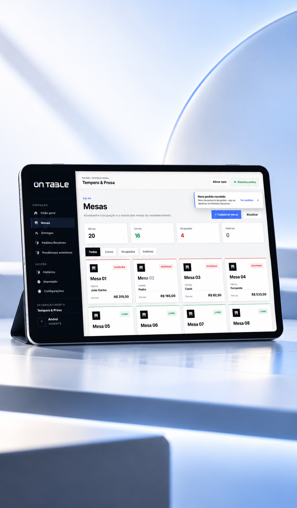
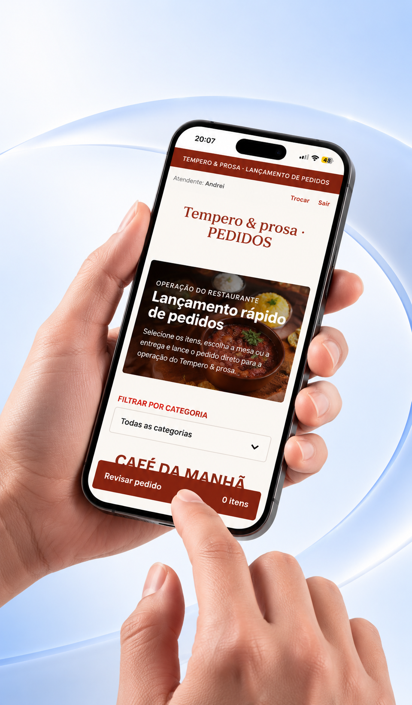
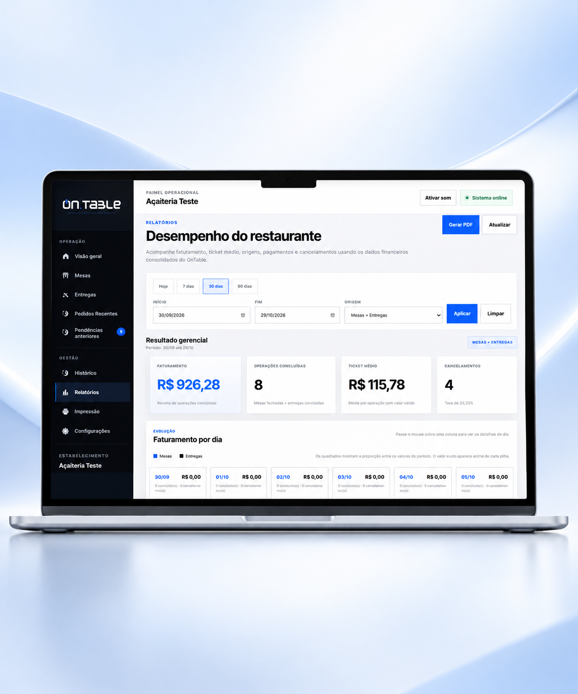
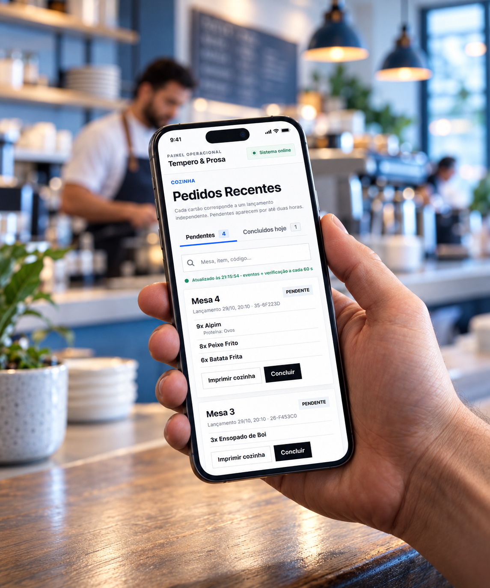

OnTable.
Uma operação mais conectada, do pedido à cozinha.
O OnTable foi pensado para conectar as atividades de um restaurante em um fluxo mais organizado: atendimento, mesas, pedidos, cardápio e cozinha.




A rotina de um restaurante reúne informações que precisam circular com rapidez e clareza. Quando cada etapa funciona isoladamente, o atendimento perde visibilidade sobre o que acontece na operação.
Concentrar os fluxos do restaurante em um sistema que fosse simples para quem registra pedidos e útil para quem precisa acompanhá-los e prepará-los.
Organizamos a experiência a partir das tarefas diárias da equipe. A solução articula gestão de mesas, cardápio, registro de pedidos e visualização para a cozinha, com foco na sequência de uso e na clareza das informações.
O que faz parte da solução.
- 01Gestão de mesas e pedidos
- 02Cardápio digital
- 03Fluxo de pedidos da cozinha
- 04Painéis de acompanhamento